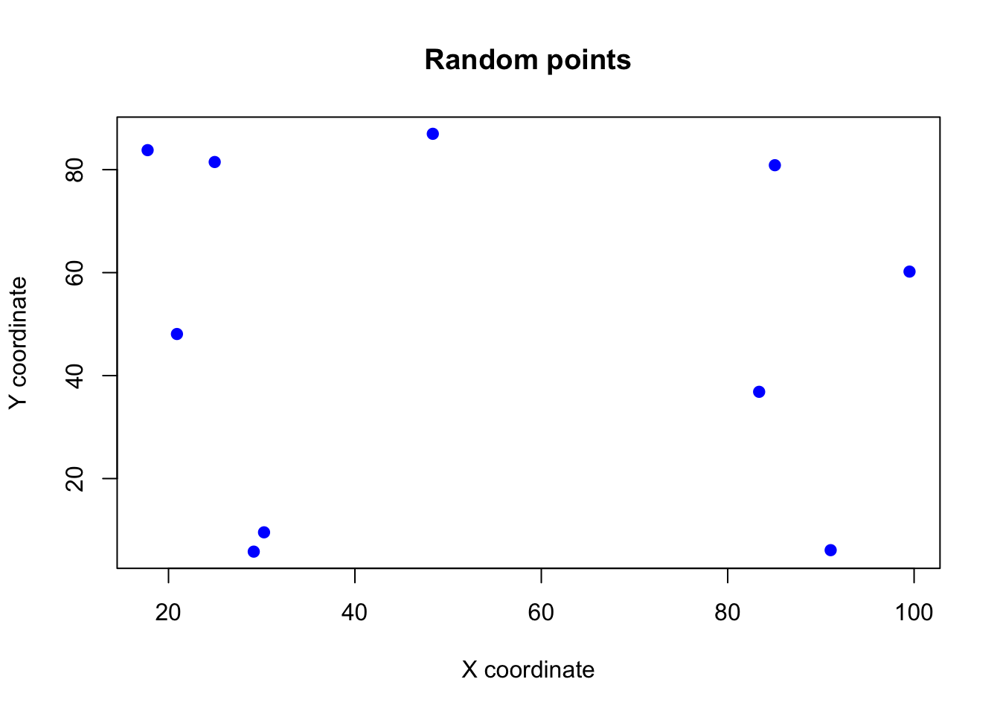
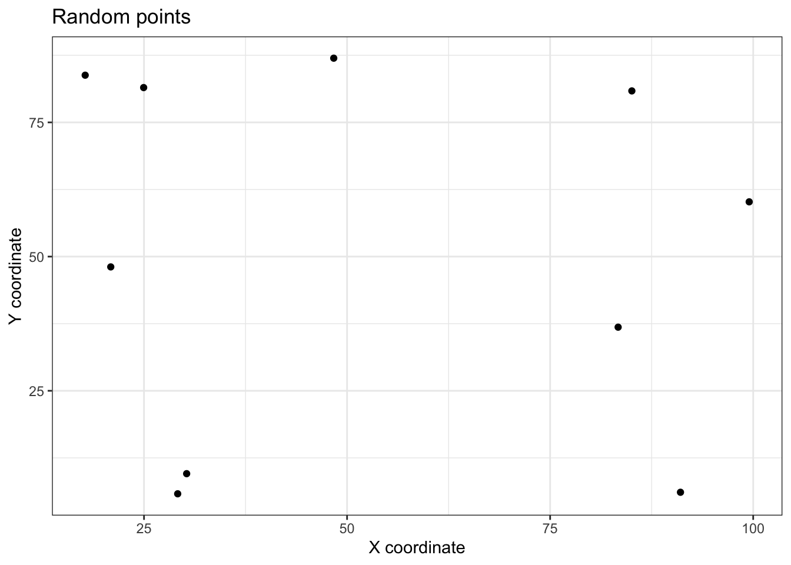

set.seed(1209)
xcoord <- runif(n = 10, min = 0, max = 100)
ycoord <- runif(n = 10, min = 0, max = 100)
sites_xy <- data.frame(xcoord, ycoord)2 Sampling infinite populations
There are 2 types of populations from which we may wish to take a random sample; finite and infinite populations.
- Finite populations are made of discrete objects like households, people, farms etc.
- Infinite populations are continuous, such as soil, water in a stream.
2.1 Infinite populations
With infinite populations, we deal with continuous variables which the function sample() cannot handle as it is designed to work with discrete variables only (whole numbers).
2.1.1 Uniform distribution
Imagine we are interested in estimating the mean of a measurement, spatially, across a study area. In this case we need to randomly choose a spatial location which is defined by a spatial coordinate, x and y, and the chance of choosing any location is equal. This is a uniform distribution.
Assuming a hypothetical study site 100m wide and 100m long where we wish to choose 10 random locations, then we may use the technique below to randomly select 10 locations based on x and y coordinates:
The runif function generates random numbers from a uniform distribution, which means that each number is equally likely to be chosen.
The 3 main arguments (inputs) are:
x: the number of samples,min: the minimum value we want in our random numbersmax: the minimum value we want in our random numbers
Use ?runif to learn more about the runif() function.
As we can see, with two variables (x and y) we now use a data frame to store the information.
sites_xy xcoord ycoord
1 29.14598 5.810736
2 48.35873 86.962687
3 99.50902 60.200064
4 17.75811 83.790473
5 24.95613 81.485062
6 20.90561 48.077787
7 91.04788 6.096274
8 30.24953 9.560046
9 83.37310 36.851027
10 85.06082 80.8642362.1.2 Exploring the data frame
Viewing the data frame can eventually become clunky, and this is even more so when we have more than 2 variables. Use the head() or str() functions to view the first few rows or the structure of the data frame, respectively.
head(sites_xy) xcoord ycoord
1 29.14598 5.810736
2 48.35873 86.962687
3 99.50902 60.200064
4 17.75811 83.790473
5 24.95613 81.485062
6 20.90561 48.077787Using head() shortens the output to the first few rows, which helps a lot when the data frame is large (you don’t want to see all the rows at once since the maximum number of rows that can be displayed is 1000).
str(sites_xy)'data.frame': 10 obs. of 2 variables:
$ xcoord: num 29.1 48.4 99.5 17.8 25 ...
$ ycoord: num 5.81 86.96 60.2 83.79 81.49 ...The str() function provides a concise summary of the structure of the data frame. It tells us the number of observations and variables, and the type of each variable. This function is probably the most used exploratory function in R.
Bonus: The glimpse() function from the dplyr package is a more modern and user-friendly version of str(), and works with both data frames and tibbles. It is especially useful when working with large data frames.
dplyr::glimpse(sites_xy)Rows: 10
Columns: 2
$ xcoord <dbl> 29.14598, 48.35873, 99.50902, 17.75811, 24.95613, 20.90561, 91.…
$ ycoord <dbl> 5.810736, 86.962687, 60.200064, 83.790473, 81.485062, 48.077787…Notice the :: operator in the glimpse() function. This is used to access functions from a package without loading the entire package. We basically interpret this as: “use the glimpse() function from the dplyr package.” Note that the package must be installed for this to work and you also need to know in advance that the function glimpse() is available in the package dplyr.
2.1.3 Visualising the data
After generating the random points, it is always a good idea to visualise them to see if there are issues with the random points. This is especially important when working with spatial data – in rare cases, the random points may cluster in one area, which is not ideal for a random sample.
We can use the plot() function to visualise the points, or we can use the ggplot2 package. With enough effort, both methods can produce the same plot, but ggplot2 is more flexible as it follows the grammar of graphics1. My recommendation is that you learn ggplot2 as it is more powerful and flexible. A good idea in this case is to plot in base R first, and then asking GenAI to plot the same plot using ggplot2.
1 The grammar of graphics is a system for understanding and building graphs by combining components, such as data, scales, and layers, in a consistent and structured way.
plot(sites_xy,
pch = 19,
col = "blue",
main = "Random points",
xlab = "X coordinate",
ylab = "Y coordinate"
)
library(ggplot2)
ggplot(
data = sites_xy,
aes(x = xcoord, y = ycoord)
) +
geom_point() +
labs(
title = "Random points",
x = "X coordinate",
y = "Y coordinate"
) +
theme_bw()
Clearly, one issue is that not all study areas are rectangles! Rather, they are quite often irregular. This artificial dataset is just to illustrate the concept of sampling infinitely, rather than be practically useful. The analysis of spatial data is not in the scope of this unit.
2.2 Practice
Use this section to practice taking random samples from finite populations. Code is provided, but hidden by default for you to make comparisons with your own. Click on the “Show the code” button to reveal the code.
- Generate 20 random points within a 100m x 100m study area.
Show the code
set.seed(1242)
xcoord <- runif(n = 20, min = 0, max = 100)
ycoord <- runif(n = 20, min = 0, max = 100)
sites <- data.frame(xcoord, ycoord)- Now this combines
sample()andrunif()functions. Userunif()to generate 100 data points between 10 and 20, and then usesample()to sample 20 of these points.
Show the code
set.seed(1242)
data <- runif(n = 100, min = 10, max = 20)
sampled_data <- sample(data, size = 20)- Use
ggplot2to plot a histogram of the sampled data generated in the previous step.
Show the code
library(ggplot2)
ggplot(
data = data.frame(data = sampled_data),
aes(x = data)
) +
geom_histogram(
binwidth = 0.5,
color = "black"
) +
labs(
title = "Histogram of sampled data",
x = "Value",
y = "Frequency"
) +
theme_bw()